Setembro de 2026
Proposta digital
para a Clami
O catálogo, a experiência no celular e o atendimento ao cliente.
Proposta Kortex · Material para apresentação de Fernando à equipe Clami.
Institucional
A Kortex e o projeto Clami
Tecnologia aplicada à experiência de compra.
A proposta da Kortex conecta a apresentação das peças ao atendimento nas lojas, com conteúdo que a equipe consegue manter atualizado.
- Site e catálogoConsulta às peças e painel de edição.
- Marketing digitalConteúdo sobre coleções e campanhas.
- Atendimento com IARespostas com base aprovada e encaminhamento à equipe.
Site atual / página sobre
Leitura da história da Clami no celular
Texto de 14 px em uma coluna estreita
Parágrafos longos seguem por várias telas. O vídeo ocupa espaço lateral e reduz a área de leitura.
PropostaResumo primeiro. Depois, a história completa. Letras maiores e blocos curtos para uma leitura mais confortável.
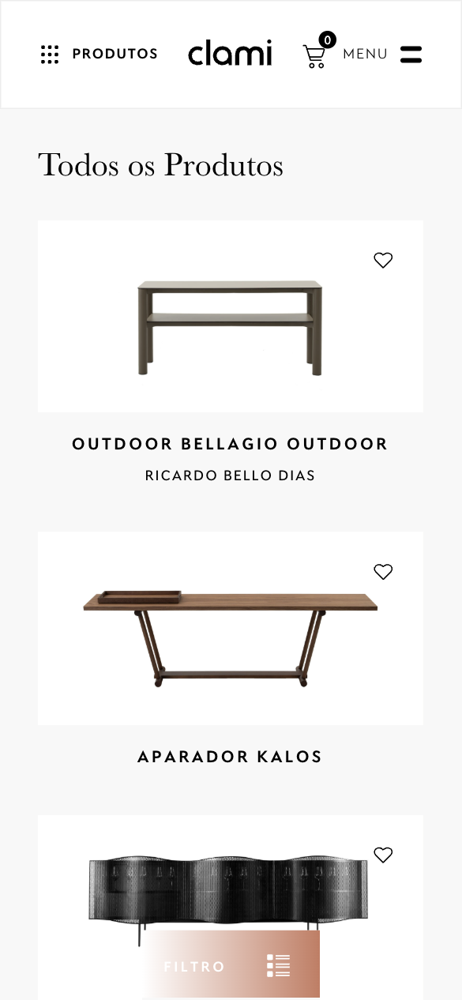
Site atual / catálogo
Navegação do catálogo no celular
Uma peça por linha e filtro sobre o conteúdo
A lista é longa. O filtro fixo concorre com os produtos na parte inferior da tela.
PropostaBusca por nome, categorias visíveis e filtros fáceis de fechar fora da área das peças.
Proposta / computador
A coleção ganha espaço na apresentação
Fotografia maior. História, produtos e lojas em espaços identificáveis.
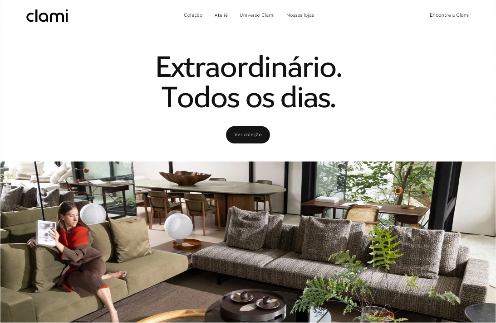
Proposta / experiência móvel
A mesma proposta no celular
Entrada e coleção em uma grade pensada para toque, leitura e comparação.
Na homologação: conferir tamanho dos textos, contraste e facilidade do toque com o público da Clami.
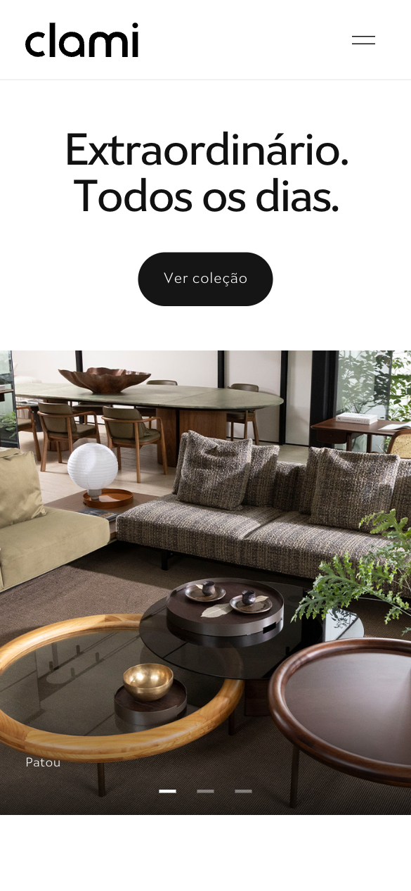
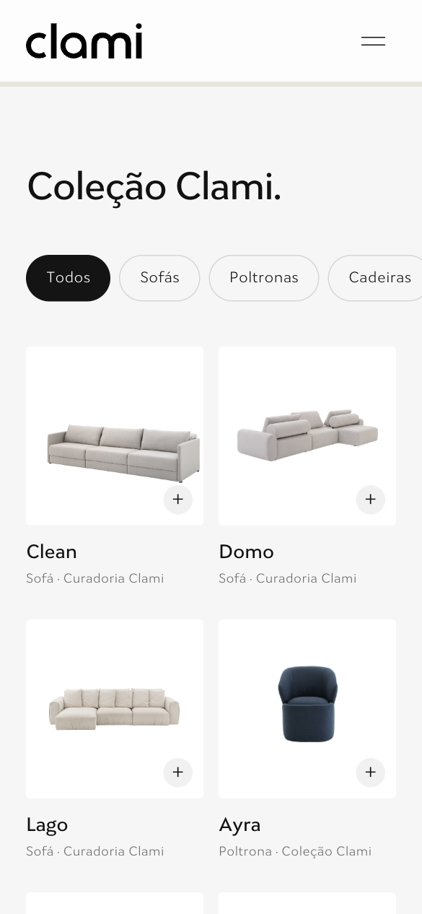
Proposta / produto
A ficha do produto acompanha a tela
Imagem da peça, informações e contato no mesmo fluxo.
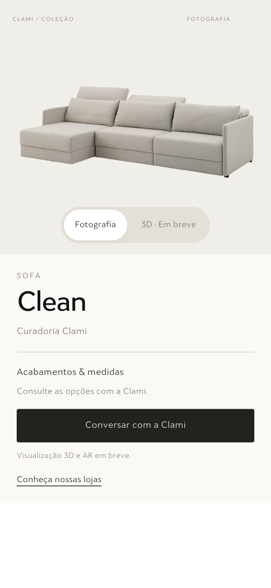
A peça em detalhe
Acabamentos, dimensões e materiais organizados para consulta.
Conversar sobre esta peçaExemplo de interfaceBansang / fidelidade
A referência real orienta o modelo
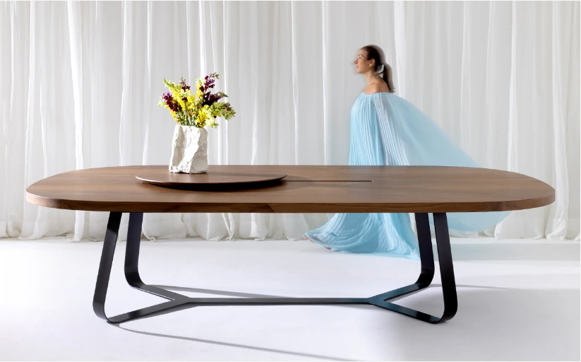
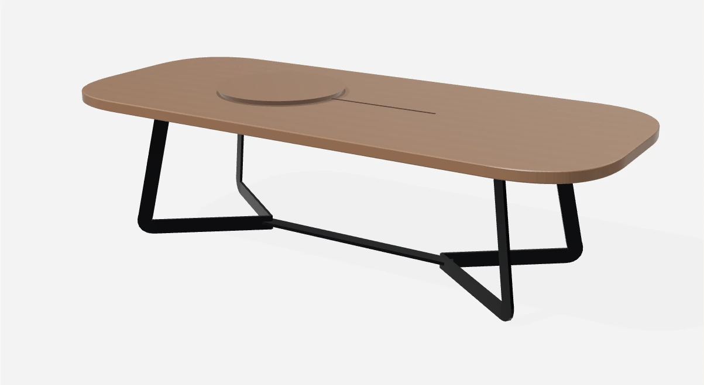
O piloto permite avaliar forma e navegação. A publicação definitiva exige validar medidas, acabamentos e proporções com a Clami.
08Proposta / experiência móvel
Da peça ao ambiente
01Explorar a peça em 3D
02Conferir detalhes e acabamento
03Visualizar no próprio ambiente
Em aparelhos compatíveis, “Ver em casa” abre a experiência pela câmera. Compatibilidade, escala e precisão exigem validação em celulares reais.
09Proposta / visita
Consulta às lojas da Clami
Endereço e rota por unidade, no mesmo percurso de consulta.
O site proposto reúne as quatro lojas e permite encaminhar a peça de interesse e a unidade escolhida para o atendimento.
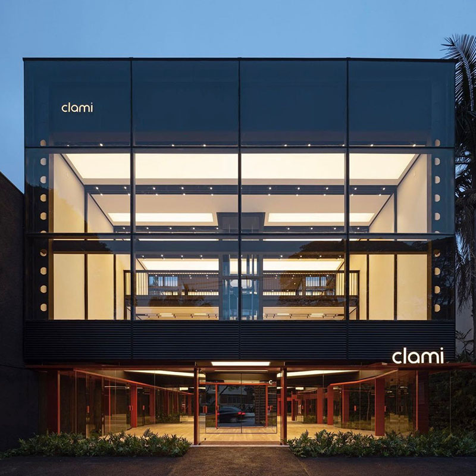
Selecione uma unidade para conhecer o espaço.
Conteúdo e trabalho
Instagram com pauta, não volume
- AmbienteA peça em contexto, com direção de arte.
- Design e matériaDetalhes, acabamentos e decisões de projeto.
- História da ClamiPessoas, autoria e repertório da marca.
- Visita e atendimentoLoja, conversa e próximo passo claro.
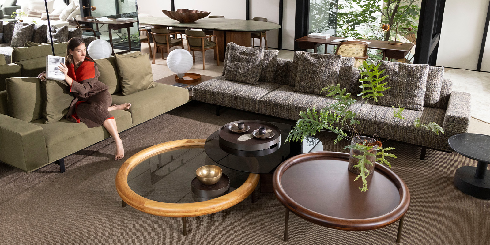
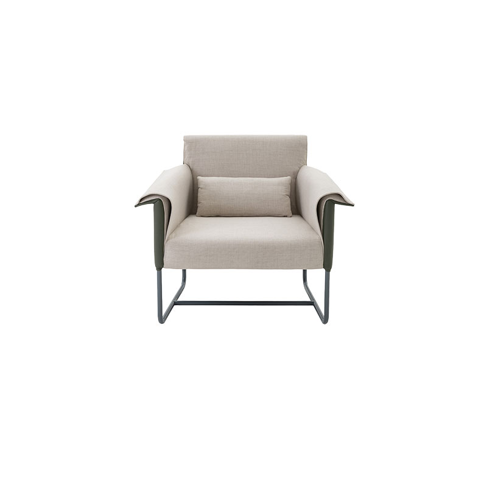
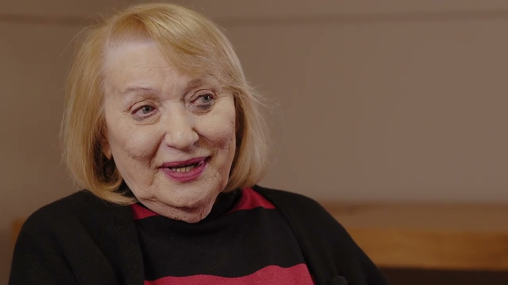
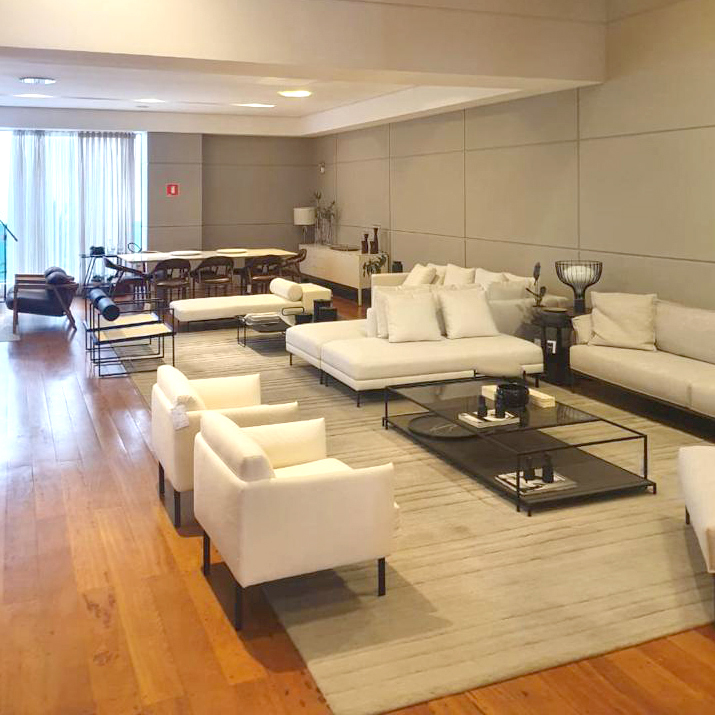
IA / arquitetura proposta
IA com conhecimento da Clami
Respostas apoiadas nas informações da marca.
A IA consulta catálogo, histórico autorizado de mensagens e correções aprovadas para responder com o tom da Clami.
A base evolui com aprovação humana. O que não estiver confirmado vai para a equipe.
BASE CLAMIFluxo proposto
Pergunta do cliente→Consulta às fontes→Resposta ou equipe
Se faltar confirmação, a IA não inventa: encaminha para a equipe Clami.
Entregas do projeto
O que o site-base contempla
Layout para computador e celular, navegação pelo catálogo, ficha de produto e acesso às lojas.
Telas organizadas para consulta e comparação.Até 120 produtos, painel de edição e dados organizados pela Clami.
Autonomia para atualizar o acervo.WhatsApp, SEO básico e publicação após aprovação.
Manutenção opcional: até 4 horas por mês.Plano proposto
Etapas e pontos de aprovação
- Organização do acervoAté 120 produtos, fotos, nomes, medidas e acabamentos.
Aprovação: acervo e prioridades do catálogo.
- Design e desenvolvimentoTelas para computador e celular, catálogo e painel de edição.
Aprovação: navegação e apresentação das peças.
- Conferência e lançamentoRevisão de produtos, contatos e testes de navegação.
Aprovação: versão final para publicação.
Prazo estimado: 10 a 14 semanas. A entrega pode ser antecipada conforme o recebimento dos materiais, as aprovações e a conclusão das etapas.
15Celular e atendimento
Critérios para aprovar a experiência
Textos sem zoom, contraste e ordem das informações em diferentes idades.
Encontrar uma peça, consultar detalhes e chegar ao contato da loja sem perder o contexto.
01 Encontrar uma peça02 Consultar os detalhes03 Chegar ao atendimento
Validação proposta: realizar esse percurso em celulares reais com a equipe, registrar dificuldades e ajustar antes da publicação.
16Alinhamento com a Clami
Pontos para avaliação da equipe
Definir até 120 produtos prioritários e a ordem do catálogo.
Centralizar fotos, nomes, medidas, acabamentos e contatos das lojas.
Escolher o canal inicial da IA e quem atualiza a base de respostas.
Confirmar arquivos oficiais e produtos que entram no piloto.
Após a avaliação interna, Fernando reúne o retorno da equipe para alinhar escopo, cronograma e proposta comercial com a Kortex.
17Investimento preliminar
Site com painel de edição e catálogo
| Opção | Investimento | Prazo indicativo |
|---|---|---|
| Base com 30 produtos | R$ 8.600,00 | 8 a 12 semanas |
| Primeiro ciclo até 120 produtos | R$ 9.387,50 | 10 a 14 semanas |
| Catálogo com 216 produtos | R$ 10.227,50 | 12 a 16 semanas |
| Produto além dos 30 | R$ 8,75 por item | Conforme o volume |
Cálculo transparente: R$ 8.600 pelo site-base com 30 produtos + R$ 8,75 por produto adicional. Inclui design, desenvolvimento, painel de edição, WhatsApp e SEO básico, considerando textos, imagens e dados organizados pela Clami. Valores preliminares: estamos abertos a propostas e ajustes de escopo.
18Investimento preliminar
Serviços mensais
| Serviço | Valor mensal | Volume incluído |
|---|---|---|
| Conteúdo digital | R$ 2.000 | 8 publicações em 1 rede |
| Gestão de tráfego | R$ 1.200 | 1 plataforma, até 3 campanhas |
| Manutenção do site | R$ 600 | Até 4 horas |
Conteúdo com materiais da Clami e uma rodada de ajustes. Foto, vídeo presencial, verba de mídia e criativos extras ficam separados.
19Investimento preliminar
Pilotos de IA e 3D
| Serviço | Investimento | Escopo |
|---|---|---|
| Implantação de IA | R$ 4.500 | 1 canal, base delimitada |
| Acompanhamento de IA | R$ 900 / mês | Até 6 horas mensais |
| 3D/AR por item | R$ 157,40 por item | Produção unitária por produto |
Cada item 3D/AR tem valor unitário de R$ 157,40, mediante o recebimento dos arquivos e referências necessários. IA: consumo e integrações especiais ficam separados.
20Próximo ciclo
Para avaliação: até 120 produtos
R$ 9.387,50
Estimativa: 10 a 14 semanas
A entrega pode ser antecipada conforme o envio dos materiais, as aprovações e a conclusão das etapas.
A Clami seleciona até 120 peças e entrega os materiais. A Kortex apresenta as páginas para aprovação, implementa o catálogo e prepara a publicação.
Referência inicial: estamos abertos a propostas e a ajustar escopo, etapas e condições com a Clami.
Condição sugerida: 40% na contratação, 30% na aprovação e 30% na entrega.
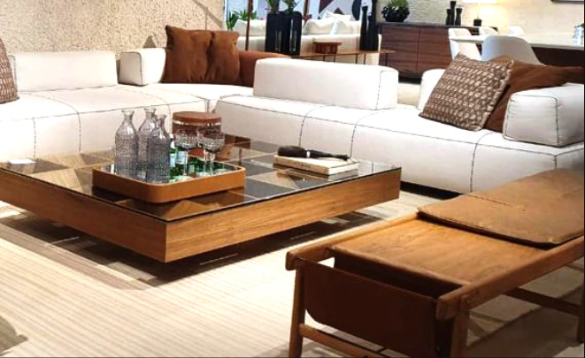